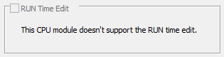
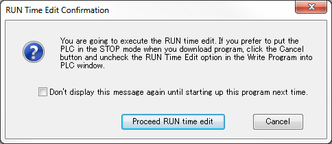

Topic: CL090

| Write Project Into PLC |
Topic: CL090
|
Write Project into PLC can be accessed from the PLC Menu or the PLC tab of the Navigation Window. Selecting Write Project into PLC opens a dialog that begins the process of copying the Project from the PC memory to the PLC.


1 PC: This area of the dialog lists attributes of the program stored in PC memory and open in the Ladder Editor.
2 Project Name: Displays the name of the project currently open in the Ladder Editor.
3 Program Size: Displays the Program Size (in Steps) of the Project on the PC.
4 Memory Bar Graph: Graphically displays the portion of available memory used by the Program.
5 Project File Size: Displays the Project Size (in Bytes) of the Project opened on the PC.
6 Memory Bar Graph: Graphically displays the portion of available memory used by the Project.
7 Last Update: Time Stamp of Last Update to project on PC.
8 Write Project File into PLC: Must be checked to transfer the project file into PLC memory.
9 Right Arrow: The arrow indicates the direction of the project transfer. This transfer is from the PC to the PLC.
10 PLC: This area of the dialog lists attributes of the program stored in PLC memory.
11 CPU Type: Part number of the CPU module.
12 Project Name: Displays the name of the Project currently loaded in the PLC.
13 Program Size: Displays the Program Size (in Steps) of the Program currently loaded in the PLC.
14 Memory Bar graph: Graphically displays the portion of available memory used by the Program.
15 Project File Size: Displays the Project Size (in Bytes) of the Project currently loaded in the PLC.
16 Memory Bar Graph: Graphically displays the portion of available memory used by the Project.
17 Last Update: Time Stamp of Last Update to project in PLC.
18 RUN Time Edit: When this option is checked, the RUN Time Edit is enabled.

|
Note: The CLICK Ethernet CPU modules support the bumpless project transfer. While the CLICK Programming Software is downloading a new project into the CLICK PLC, the PLC keeps running the existing project. Once the project download is completed and there is no error in the new project, the PLC starts executing the new project without pausing (bumpless). If there is an error in the new project, the PLC keeps running the existing project. In the case, system control bit SC30 (_Run Edit Project Error) turns on to indicate the error.
Note: If the CLICK PLC is not an Ethernet CPU module, this option is grayed out.
 |
|
After clicking OK, a second dialog opens requiring verification that you want to overwrite the project in the PLC.
